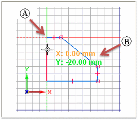
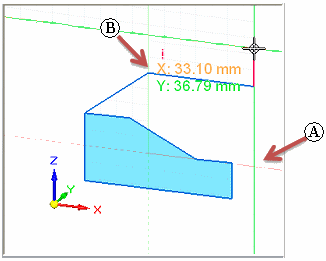
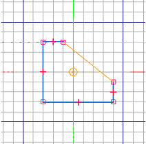
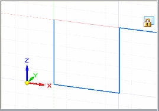

Working with grids
The grid helps you draw and modify elements relative to known positions in the working window. It displays a series of intersecting lines or points, and X and Y coordinates, which enable you to draw 2D elements with precision. You can use the grid with all sketching, dimensioning, and annotation functions. It also works with IntelliSketch and the Select command.
For example, you can use the grid to:
-
Draw elements at known locations, draw elements known distances apart, and so forth. When the Show Grid option is set, the grid is displayed whenever you create or modify 2D elements. For an example, see Help topic Draw a line with a grid.
-
Align dimensions and annotations by snapping them to grid points or lines. Only bolt hole circles and center marks cannot be snapped to a grid. For an example, see Help topic Place a dimension or annotation using a grid.
synchronous environment 
ordered environment 
Grid display and setting options
You can use the Grid Options command to open the Grid Options dialog box, where you can specify grid appearance and turn grid display options on and off. For easy access, some of the options also are available as commands on the ribbon.
|
You can do this |
Using these options in the dialog box |
Or selecting this command on the ribbon |
|
Display the grid. |
Show Grid, plus one of the following:
|
Show Grid
|
|
Turn alignment lines on and off. |
Show Alignment Lines |
Not available |
|
Turn snap-to-grid on and off. |
Show Grid, plus one of the following:
|
Snap to Grid
|
|
Turn coordinate display on and off. |
Show Readouts |
Not available |
|
Change grid spacing. |
Angle Major Line Spacing Minor Spaces Per Major |
Not available |
|
Enter X and Y coordinates for the next point. |
Enable Key-ins (X,Y) |
XY Key-in
|
|
Display X and Y alignment lines. |
Show Alignment Lines |
Not available |
|
Change grid line color. |
Major Line Color Minor Line Color |
Not available |
|
Change grid origin line colors |
On the Colors tab in the Solid Edge Options dialog box, change the Select and Highlight colors. |
Not available |


Grid shortcut keys
You can use the following shortcut keys while working with grids:
|
You can do this |
Using these shortcut keys |
|
Reposition grid to current cursor position. |
F8 |
|
Turn snap-to-grid on and off. |
F9 |
|
Reset the grid origin point to zero. |
F12 |
|
Displays the X and Y coordinate input boxes, with the cursor in the X box. |
Alt+X |
|
Displays the X and Y coordinate input boxes, with the cursor in the Y box. |
Alt+Y |
How grids work in the ordered environment
The grid is displayed in Draft and in profile and sketch mode as you draw, dimension, and annotate 2D elements. The X and Y coordinates it displays are relative to an origin point (A), which you can position anywhere in the window. The origin point is marked by the intersection of the X and Y origin lines.
As you move the cursor, the horizontal and vertical distance between the cursor position and the origin point is dynamically displayed (B).
If the Snap To Grid option is on when you add dimensions and annotations, they will snap to grid lines and points.

How grids work in the synchronous environment
The grid is available for drawing and editing 2D elements, and for adding 2D dimensions and annotations.
Grid visibility is somewhat different in Draft than in synchronous modeling environments. In Draft, when the grid is turned on, it is always visible. In synchronous modeling, the grid is visible only when a sketch plane is locked.
In 3D environments, the grid helps you draw horizontally and vertically with respect to part edges and model faces by displaying a series of intersecting lines or points, and by displaying alignment lines. The grid also helps you draw with precision by displaying X and Y coordinates that are relative to an origin point (A), which you can position anywhere in the window.
As you move the cursor, the horizontal and vertical distance (B) and orientation between the cursor position and the origin point is displayed and updated.

If the Snap To Grid option is on when you add dimensions and annotations, they will snap to grid lines and points.
Recognizing the grid origin
The grid origin is marked by the intersection of the X and Y origin lines.
-
In ordered profile and sketch, the default display mode is a red dashed line for the X axis and a green dashed line for the Y axis. The user-defined grid origin point is marked by a circle and dot. The default origin is at the center of the profile or sketch reference plane.

-
In Draft, the default display mode is a red dashed line for the X axis and a magenta dashed line for the Y axis. The user-defined grid origin point is marked by a concentric circle and dot. The default origin is the (0,0) location of the drawing sheet.

-
In the synchronous modeling environment, the default display color scheme matches that of the user-defined origin triad in the center of the graphics window. The X axis is a red line, and the Y axis is green. These lines are solid in the positive direction and dashed in the negative direction. There is no marker at the user-defined origin point. The default origin is the 0,0,0 center of the currently locked sketch plane.

Moving the grid origin
You can move the grid origin point using either of these commands:
-
Use the Reposition Origin command
 to move the origin to a user-defined location. This is helpful when you want to do
any of the following:
to move the origin to a user-defined location. This is helpful when you want to do
any of the following:-
Add dimensions or constraints that are horizontal or vertical to a model edge.
-
Draw lines and other elements at a precise distance from another element at a known location.
-
Offset a series of elements by the same distance from a known location.
-
-
To automatically reset the origin point to match the origin of the drawing sheet or working plane, use the Zero Origin command .
The Reposition Origin and Zero Origin commands are available in synchronous modeling environments only when a sketch plane is locked.
See the Help topic, Reposition the grid origin point.
Changing the grid orientation
In ordered profile and sketch, the default orientation for the x-axis of the grid is horizontal to the profile or sketch reference plane. You can reorient the x-axis to any angle using the Angle option on the Grid Options dialog box.
In the synchronous modeling environment, the orientation of the grid axes matches the origin axes of the currently locked sketch plane. When you lock onto a different sketch plane, the origin axes reorient to the new plane. You can use the Reposition Origin command to do the following:
-
Change the grid angle. See the Help topic, Reposition the sketch plane origin.
-
Ensure that dimensions placed on coplanar geometry remain horizontal and vertical. See the Help topic, Set sketch plane horizontal and vertical for dimensioning.
In Draft, the default orientation for the X-axis of the grid is horizontal. You can reorient the X-axis to any angle using the Angle option on the Grid Options dialog box.